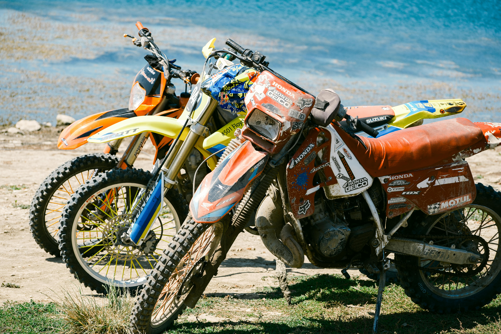

KIIVER
Kiiver on krossisõitja tähtsaim varustusese. Vali sobiva suurusega kiiver, mis istub tihedalt ja pakub head kaitset kõigist suundadest.
- Hea ventileerimine
- Kindel ja mugav istuvus

PRILLID
Krossiraja tolmu ja prahi eest kaitsevad prillid on hädavajalikud. Investeeri kvaliteetsetesse prillides — selge nägemine rajal on ohutu sõidu eeldus.
- Mugav vahtpadjestus
- Hea õhuvahetus

RINDKAITSE
Kombineeritud rindkaitse ja seljakaitse kaitseb sind kukkumiste ja löökide eest, mis krossisõidul paratamatult juhtuvad.
- Hingav materjal
- Reguleeritav kinnitus

KINDAD
Kindad kaitsevad käsi kukkumiste korral ja tagavad hea haarde juhtraual. Õige suurus ja peopesa pehmendus vähendavad väsimust pikematel sõitudel.
- Pehmendatud peopesad
- Elastne seljaosa

KROSSISAAPIKUD
Head krossisaapikud on kõrged ja jäigad, et kaitsta pahkluud ning aidata säilitada õiget asendit pedaalide peal.
- Reguleeritavad klambrid
- Hingav ja vastupidav

KROSSISÄRGID
Krossisärgid on kerged, hingavad ja vastupidavad. Erksa värviga särk muudab sind rajal teistele nähtavamaks.
- Mugav liikumisvabadus
- Kiiresti kuivav materjal

KROSSIPÜKSID
Tugevdatud materjaliga krossipüksid kaitsevad kukkumiste korral ja on mugavad ka pikematel sõitudel.
- Hingav materjal
- Tugevdatud põlvepiirkond

KAELAKAITSE
Kaelakaitse vähendab kaela vigastuse riski kukkumise korral. Eriti soovitatav algajatele, kes ei ole kukkumistega veel harjunud.
- Kerge ja hingav
- Lihtne kinnitussüsteem

RATTA KORRASOLEK
Enne rajale minekut veendu, et su ratas on tehniliselt täiesti korras. See ei hoia ära mitte ainult katkiseid detaile, vaid on sinu turvalisuse garantii.
- Sobivad rehvid ja õige rehvirõhk
- Korralikult reguleeritud pidurid
- Terve ja pragudeta raam